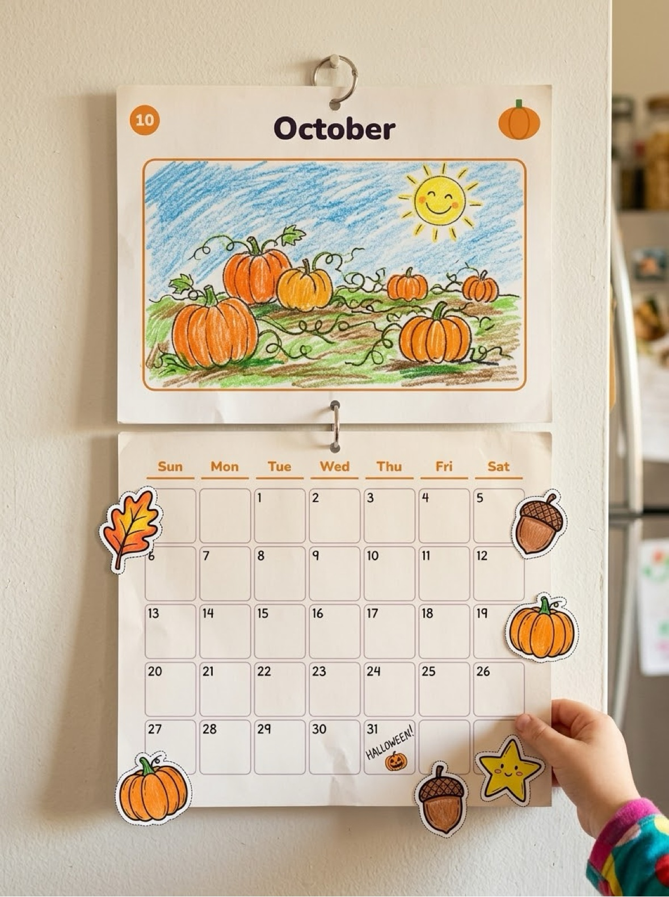
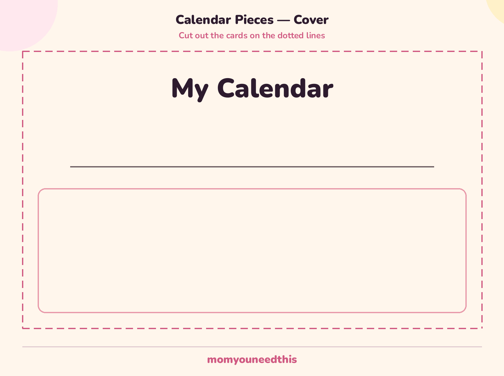
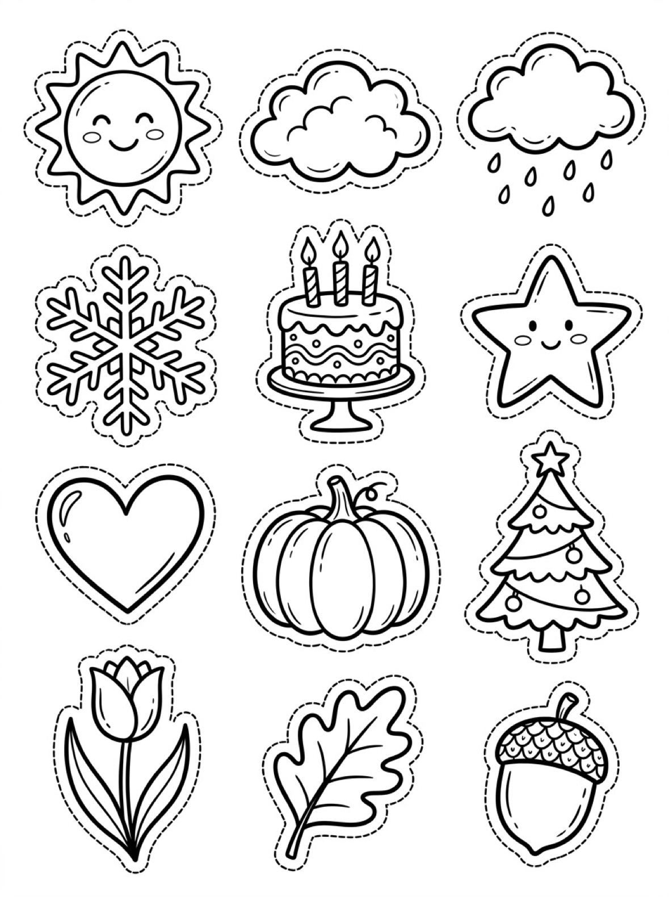

Calendar Craft Activities Free Printable Calendar Crafts For Kids
Cut, paste, and create with these free printable calendar craft activities. Toddlers and preschoolers build their own calendars while practicing scissor skills and learning about days and months.

Quick Answer
This free printable calendar craft activity is designed for toddlers and preschoolers ages 2-5. The worksheet includes hands-on exercises that build early learning skills through play. Download and print at home with no signup needed — no account required, just print and start learning.
At a Glance
- Ages: 2–5
- What you get: a free printable calendar craft with buildable pieces — month cards, calendar grids, number tiles and decorations
- Supplies: cardstock, scissors, glue, plus stickers or drawings for decorating
- Cost: Free — no signup, no payment, just download and print
✂️ Make Your Own Calendar
Use these calendar crafts to help your child build a real calendar they can use — cutting, pasting, and decorating while learning days, numbers, and months.
Free Calendar Craft Activities
Your Free Printable Is Ready!
Download the calendar craft activities printable below and print it at home — no signup needed.
🧩 Print the Calendar Pieces
Your calendar now comes with real pieces to print and build: a cover, 12 month cards, 12 calendar grids, and number tiles 1–31.

Download Your Free Calendar Pieces
All 26 pages in one PDF — month cards, calendar grids and number tiles 1–31.
⬇️ Download Free Calendar Pieces 🖨️ Print🎁 Free printable for toddlers and preschoolers

Download Your Free Calendar Add-Ons
Weather pieces, special-day markers and decorations to colour, cut out and stick on.
⬇️ Download Free Calendar Add-Ons 🖨️ Print🎁 Free printable for toddlers and preschoolers
How To Use These Activities
Print the instruction sheet and calendar pieces on cardstock. Cut out the month cards, grid pages, and number tiles, then draw a picture on each month card. For each month, place the number tiles in the grid, starting with the 1st under its weekday; leave the rest of each square free for writing. Stack the cover, month cards, and grid pages in order and clip or staple them at the top. Stick the gold star tile on today, then finish with the add-on decorations. You can also print the tiles page more than once, so every month has its own set of numbers ready to go.
Why Make Calendar Crafts?
Each craft on this page is handled, not just looked at. Your child cuts out the 12 month cards, 12 grids, and number tiles 1\u201331 from cardstock, then draws a picture on each month card. Building a month means placing the tiles in order, starting with the 1 under the correct weekday and leaving the rest of each square free for writing. The cover, cards, and grids stack in order and clip or staple at the top, so flipping to a new month is quick. Every day, the gold star tile moves onto today's square. The add-ons get coloured, cut out, and stuck on: weather pieces, plus markers for birthdays and holidays. Print the tiles page more than once and every month has its number set ready \u2014 no reshuffling pieces between months. It suits ages 2\u20135, with an adult doing the first round of cutting for the youngest.
🎁 Keep Exploring Free Learning Activities
Discover more printable activities, toddler resources, and learning ideas created for busy parents.
🎁 View All Free Resources❓ Calendar Craft Activities FAQs
Is the Calendar Craft Activities printable free?
Yes — every printable on MomYouNeedThis is 100% free to download and print. No signup, no payment, just tap the download button.
How do I download and print it?
Tap the download button on this page to save the file, then print it on regular paper with any home printer. Cardstock makes extra-durable pages for little hands.
What does my child learn from this activity?
Calendar crafts build scissor skills, gluing, sequencing, and number order. Making the calendar by hand also deepens memory of days, weeks, and months.
How do I put the calendar together?
Print the pieces on cardstock and cut out the month cards, grid pages, and number tiles. Place each month's tiles in its grid, starting with the 1st under the correct weekday, then stack the cover, cards, and grids in order and clip or staple the top. Add the star to today and decorate with the add-ons. You can also print the tiles page more than once, so every month has its own set of numbers ready to go.
🔗 More Free Printables You’ll Love
Pair this printable with more free learning activities from the MomYouNeedThis library.
- 📆 Days of the Week ActivitiesLearn the seven days of the week in order.
- 📅 Calendar Learning ActivitiesExplore all calendar learning activities.
- 🔤 Alphabet Coloring PagesFree A to Z alphabet coloring printables for toddlers and preschoolers.
- 🎏 Free 5-Minute Toddler ActivitiesQuick learning activities for busy little ones.